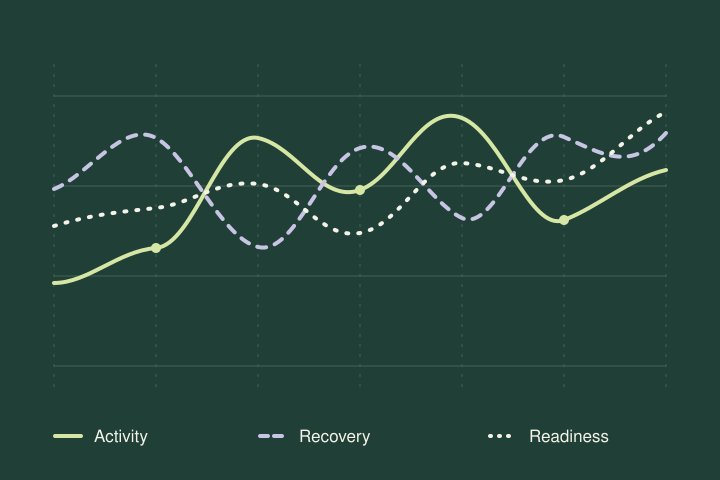

Activity
Follow your workload in relation to your personal activity range. See whether recent activity supports building or maintaining fitness, or suggests you may be doing too much or too little.
Apple Watch health, in context
Activity, recovery and readiness, together. See how your movement, sleep and current condition relate, with personalised visuals that make your balance easier to review.
Free to download. An active annual subscription is required for ongoing use.
Understand your balance by reviewing your activity, recovery and readiness alongside each other.
Follow your workload in relation to your personal activity range. See whether recent activity supports building or maintaining fitness, or suggests you may be doing too much or too little.
Explore how your recovery changes over time. A personalised visual brings key sleep measurements together, so you can review your recovery alongside your activity.
Review insights into physical fatigue and mental stress as you consider the demands of your day. Compare readiness with sleep and activity to put individual readings in context.
Recovery and readiness require sleep data from Apple Sleep or AutoSleep.
Explore your patterns
Use 7-day and 28-day trends, charts and comparisons to see how your activity and sleep relate over time.

Concept illustration — not a product screenshot or health data.
Daily wellness surveys and post-workout questionnaires let you record how you feel. Flag injuries or illness, and review mental readiness alongside your other data.
Export data when you want to take your review further.
Check in with iPhone widgets, an Apple Watch app and watch complications. moongtsun is compatible with iPhone and iPad.
Optional group sharing
Free to download.
Annual subscription for ongoing use.
Family Sharing included.
Ongoing use of moongtsun requires an active annual subscription. Payment is charged to your Apple ID when you confirm your purchase.
Subscriptions renew automatically unless you turn off auto-renewal at least 24 hours before the current subscription period ends.
Manage your subscription and auto-renewal in the App Store subscription settings.